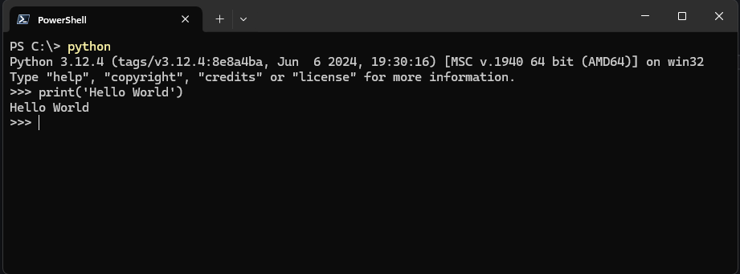
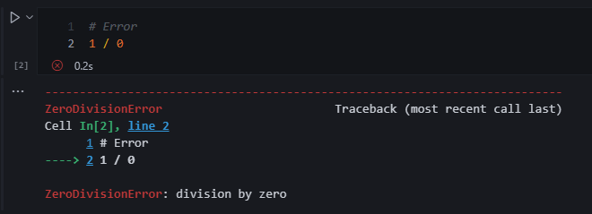

Chapter 1¶

1.1 Programming (general)¶
Input:
Receives data
Process:
Performs computations on that data
Output:
Program puts that data somewhere.
"Programs use variables to refer to data, like x, y, and z below. The name is due to a variable's value "varying" as a program assigns a variable like x with new values."
There are a sequence of steps and an order a program must follow. Ex. When reading a book, you open the book a certain way depending on your region and you start to read words from left to right ingest sentences as you read from top to bottom. You can say there is an order of operations here.
YouTube Video
Here is an example where a parent teaches their kids how to write a process in sequential logical steps.
Metaphorically, the father can be the computer, the document will be the program.
(Ctrl + Click to open in new tab)
https://www.youtube.com/watch?v=cDA3_5982h8
1.2 Programming using Python¶
Python Interpreter: Program that executes code written in the python programming language.
Example
I started my Python Interpreter using windows CMD/PowerShell with below snippit.
(Python should start up if PATH variables were setup on installation.)

Interactive Interpreter: Program that allows to execute one line of code at a time.
Code: Code is a common word for the textual representation of a program (and hence programming is also called coding).
Line: Row of text.
Prompt: ">>>", this indicates the interpreter is ready to accept code.
Statement: A statement is a program instruction.
Expressions:
Expressions are code that return a value when evaluated; for example, the code wage * hours * weeks is an expression that computes a number.
Variables: The names wage, hours, weeks, and salary are variables, which are named references to values stored by the interpreter.
Assignment: A new variable is created by performing an assignment using the = symbol.
print(): Print() function displays variables or expression values.
Comments: Characters such as "#" denote comments, which are optional but can be used to explain portions of code to a human reader.
# See <-- HashtagComment, subscribe and slam the bell icon, It means the interpreter will ignore this line of code. Write all the notes within the same line. If you make the person scroll to read, its already too long. Please create another comment line.
storeThisValue = 13
itDoesntMatterWhatYouCallMe = '13'
butItKindOfDoes = ':)'
Formatting & Standards
There is a standard way of writing so we all can be in unison to understand each other's code.
PEP 8 Style Guide
1.3 Basic input and output¶
Python by itself comes with built in functions you can use.
metaphor
Similar to excel, you use SUM(), COUNT(), etc to do aggregations. These are built in functions that come with Excel.
In python, we utilize print to ouput data in text or in a string format.
Why print()?
- We can display outputs of lines sequentially to better debug if needed
- To display any outputs, when you run code in automation, you don't need to see outputs for everything. Unless you want to be a rebel.
- Display warnings, notes, etc.
Keeping output on the same line¶
Notice the "WOW" ending seperator.
end: adds on a string the the end of your print statement
print('This is one line.', end= 'WOW')
print('This is a second line.', end= ' ')
print('This is a third line.')
Moving output to the next line¶
newline character: \n
What is an Escape Sequence?
Note the backslash is an escape sequence.
An escape sequence is a string that has a special meaning, like the newline character "\n", that always starts with a backslash "\".
Other escape sequences exist, such as "\t" to insert a tab, or "\" to print an actual backslash character.
print('This is one line.', end= '\n')
print('This is a second line.', end= ' ')
print('This is a third line.')
Basic input¶
The input() function:
is used to read input from a user. The statement best_friend = input() will read text entered by the user, and assign the result as a new string to the best_friend variable.
The input() function causes the program to wait until the user has entered text and pushed the return key.
input('Write something here to show as a notification before a user puts input')
# You don't need to have a string as a parameter like below, notice this is a comment because of #
input()
input() Example
Have a user input a value and store it as a variable for later use.
Ex. Get users body weight, age, sex, and height to calculate BMI.
Note
Just remember input() receives everything as a string.
If you want to store as an integer, you must convert.
1.4 Errors¶

Syntax Errors: Violates the programming language rules. Basically Python does not understand what you want to do.
Runtime Errors: Syntax is correct, however the operation is impossible to run.
Error Example
The error pinpoints to the line where the error occurred and labels the error accordingly.
